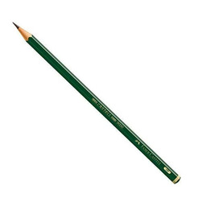
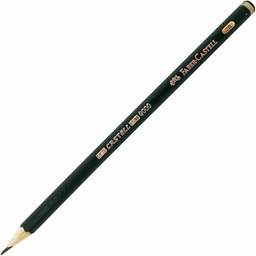
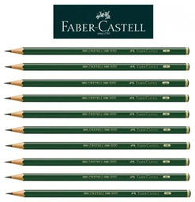

← Voltar



Caixa De Lapis
R$10,00
Descricão do Produto:
O lápis ideal para escrever e desenhar é o grafite, composto por uma mina de grafite e argila envolta em madeira,
classificado pela dureza/maciez (H, B, HB). Lápis HB é ideal para escrita e esboços claros, enquanto graduações
B (2B, 6B) são macias e ótimas para sombreamento. Formatos sextavados ou triangulares oferecem melhor aderência.
Características Detalhadas do Lápis Grafite:
Estrutura: Composto por grafite (o "carvão") e argila (o aglutinante). Quanto mais argila, mais duro (H);
quanto menos, mais macio e escuro (B).
Graduações Principais:
HB: Intermediário, ótimo para escrita escolar, de escritório e esboços iniciais, pois não solta muito pó.
B (Blackness): Macio e escuro. Ideal para desenho artístico. Aumenta a maciez e negritude de B a 8B.
H (Hardness): Duro e claro. Ideal para desenhos técnicos ou linhas finas.
Formato do Corpo:
Sextavado: Clássico, evita que o lápis role da mesa e facilita a pega.
Triangular: Mais ergonômico, reduz a fadiga da mão.
Aplicação:
Escrita/Esboço: HB ou F.
Sombreamento/Arte: 2B a 8B.
Vantagens: O lápis HB é versátil e apaga com facilidade, sendo excelente para uso escolar e artístico.
Para um melhor controle e performance, especialmente em arte, a escolha do lápis ideal depende da
intensidade de sombra desejada e da maciez do grafite